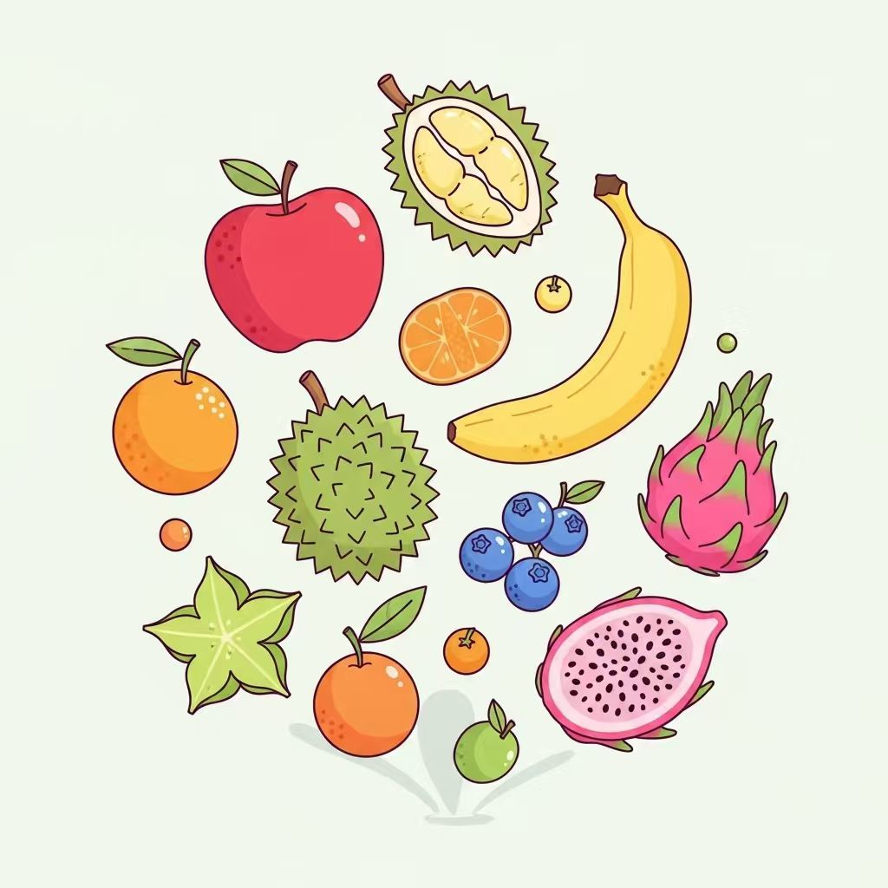
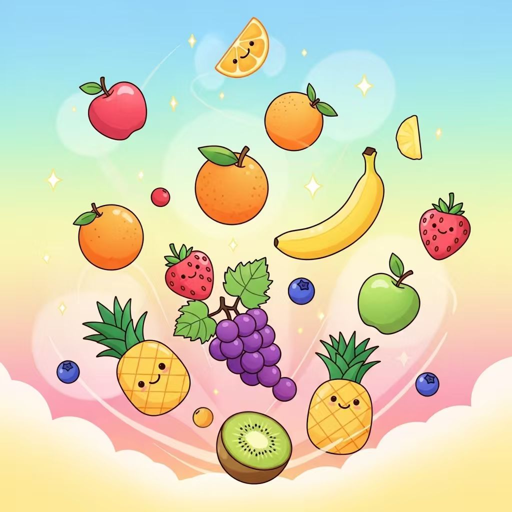
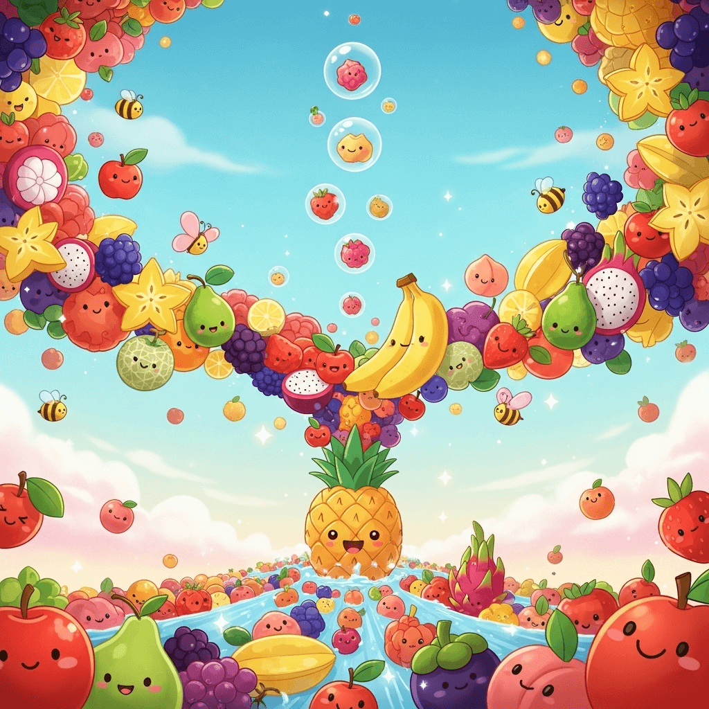
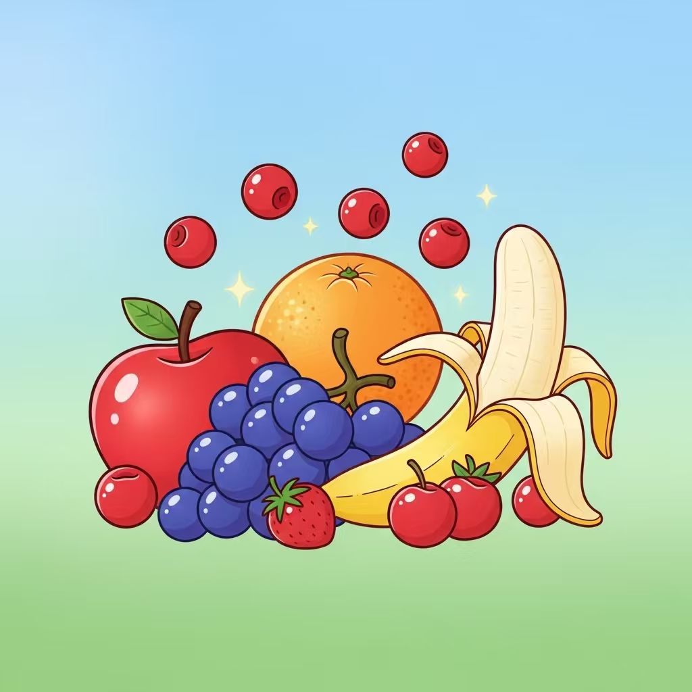

A random fruit generator is a free online tool that instantly provides you with a random fruit from our extensive database of varieties. With just one click, you can quickly discover a new fruit and get comprehensive details about it, including its nutrition facts, specific health benefits, and when it's in season. This makes it perfect for expanding your healthy eating knowledge, inspiring new recipes, or for use in educational games and creative prompts. MyGenTool makes exploring the diverse world of fruits fun and informative, helping you learn something new every time.
🍎 Random Fruit Generator – Discover New & Healthy Fruits
Discover new fruits with our random fruit generator! Get instant access to nutrition facts, health benefits, and seasonal availability for over 20 varieties. This tool helps you explore new fruit choices and learn about healthy eating in a fun, engaging way.
What is a Random Fruit Generator?
How to Use the Random Fruit Generator
1. Generate a Fruit
Click the "🎲 Generate Random Fruit" button to instantly get a fruit. Perfect for discovering something new or finding inspiration for healthy eating.
2. Explore Fruit Details
See nutrition facts, health benefits, and seasonal availability for your fruit. Quickly learn why it's a good choice for your diet.
3. Try More Fruits
Click again to generate another fruit. Keep exploring different varieties and enjoy simple, fun food discovery.

Key Features of Our Free Random Fruit Generator

Easy Fruit Discovery
Our free random fruit generator is a straightforward online tool designed to help you discover new fruits effortlessly. With just a click, you'll receive a random fruit selection, perfect for those moments you want to try something different or need a quick snack idea. This innovative fruit randomizer makes exploring the vast world of fruits simple and engaging.
Comprehensive Nutrition Insights
Every fruit our random fruit picker selects comes with detailed nutrition facts and a breakdown of its health benefits. This essential online tool goes beyond just naming a fruit; it helps you understand why each choice is good for you. Whether you're tracking calories for meal planning, looking for specific vitamins, or simply curious about what your food provides, you'll find all the information you need.


Inspire Culinary Creativity
Stuck in a cooking rut or looking for fresh recipe ideas? Our free random fruit generator can be your muse. Use this fun online tool to get a random fruit, then challenge yourself to create a dish around it – from smoothies and salads to desserts. It's a fantastic way to spark creativity in the kitchen or make fruit challenges engaging for the whole family.
Seasonal & Availability Details
Beyond just picking a random fruit, our online tool also offers helpful information about its seasonal availability. This means you can discover fruits that are at their peak freshness, tasting their best and often more affordable. You can also learn if a chosen fruit is generally available year-round or only during specific times.
Frequently Asked Questions
What is the Random Fruit Generator?
▼The random fruit generator is a helpful online tool that picks a fruit at random from our diverse list. It then displays details like nutrition facts, health benefits, and seasonal availability. It's a fun way to discover new fruits and learn about healthy eating!
How do I use the random fruit generator?
▼Using the random fruit generator is simple! Just click the "Generate Random Fruit" button on the page. MyGenTool will then instantly display a new fruit with all its interesting facts, including calories, vitamins, and best consumption season.
What kinds of fruits can I find with this generator?
▼You can find a wide variety of common and some exotic fruits using this generator. Our database includes over 20 different fruit varieties, from apples and bananas to more unique options. It's a great tool for discovering new fruits and expanding your palate.
Why should I use a random fruit generator?
▼Using a random fruit generator can be really useful for many reasons! It's perfect for getting new healthy eating inspiration, learning about fruit nutrition, or simply when you're looking for a fun, random fruit picker. It helps you explore fruit options you might not usually consider.
Does the random fruit generator provide nutrition information?
▼Yes, absolutely! For every random fruit generated, MyGenTool provides detailed nutrition facts. You'll see information like calories, vitamins, and other health benefits, helping you make informed choices for healthy eating.
Is this random fruit generator free to use?
▼Yes, the random fruit generator is completely free for everyone to use! You can generate as many random fruits as you like, whenever you need some healthy eating inspiration or just want to discover new fruits. Enjoy exploring!
Can this tool help with healthy meal planning or snack ideas?
▼Absolutely! The random fruit generator can be a fantastic resource for healthy meal planning. By introducing you to new fruits and their benefits, it can spark ideas for nutritious snacks or additions to your meals, promoting a balanced diet.
How many different fruits are in the generator's database?
▼Our random fruit generator includes a database of over 20 different fruit varieties. We aim to offer a diverse selection, so you'll always have something new to discover when you use our random fruit picker for your healthy eating journey.
Ready to Discover Your Next Favorite Fruit?
Join thousands of users who have found their perfect fruit with our Random Fruit Generator. Start exploring today!